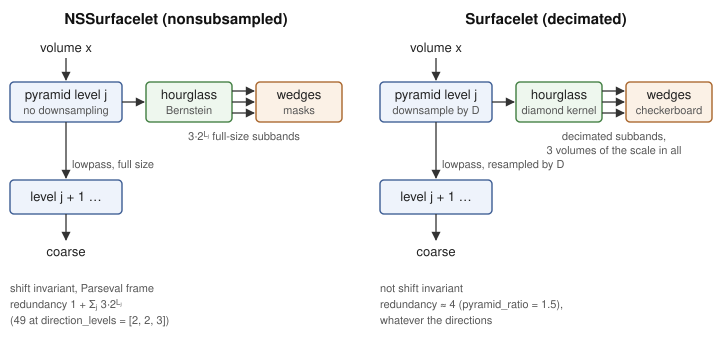
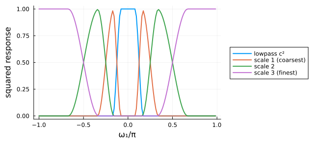
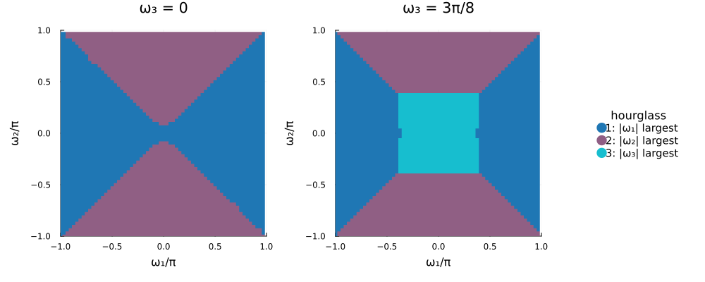
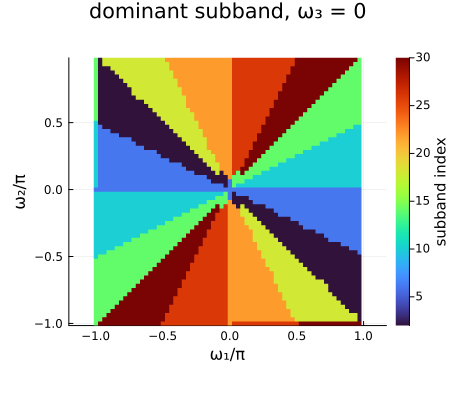
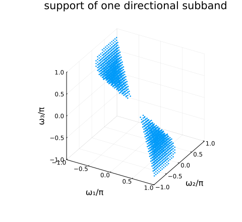

Theory
A surfacelet transform splits a volume into subbands: a lowpass, which holds the coarse approximation, and at every scale a set of directional subbands, each holding the frequencies in one cone of directions. This page explains how the package's two transforms build that split: NSSurfacelet, the nonsubsampled transform, and Surfacelet, the decimated transform of Lu and Do [1]. Properties of the transforms shows what each guarantees, with checks that run when the documentation is built.

Both transforms work in the frequency domain, in three stages:
- A multiscale pyramid splits the spectrum into a lowpass and one bandpass per scale.
- An hourglass filter bank splits each bandpass into three hourglass-shaped regions, one around each frequency axis.
- A directional stage cuts each hourglass into $2^L$ wedges, so a scale with $L$ direction levels has $3 \cdot 2^L$ directional subbands.
The nonsubsampled transform keeps every subband at the size of the input. The decimated transform downsamples the lowpass at every scale and the wedges inside each hourglass. Redundancy is the number of coefficients divided by the number of voxels.
NSSurfacelet | Surfacelet | |
|---|---|---|
| Subband sizes | all equal to the input | decimated, different per scale and hourglass |
| Redundancy | $1 + \sum_j 3 \cdot 2^{L_j}$ (49 for direction_levels = [2, 2, 3]) | about 4 with the default pyramid_ratio = 1.5, independent of the number of directions |
| Shift invariance | exact for circular shifts | no |
| Frame | Parseval (tight) with the default tight = true | perfect reconstruction, not tight |
| Streaming form | yes, one subband at a time | no |
| Volume size | any size that leaves every scale nonempty | must suit the pyramid (see make_workspace) |
The hourglass split is what separates surfacelets from a contourlet transform with an extra axis. Lu and Do show that in more than two dimensions it cannot be computed by a critically sampled filter bank, so its redundancy is at least the number of hourglasses, 3 in 3-D [1].
Nonsubsampled transform
Every filter of the nonsubsampled transform is a mask on the DFT grid, and MultiscaleFilterBanks.jl's mask-bank engine applies them; How the engine computes explains its analysis and synthesis.
Pyramid
The pyramid is Lu and Do's frequency-domain pyramid [1, Section VI-A] without its downsampling. Level $k$ ($k = 1$ is the finest) has a separable lowpass $\ell_k$: a product of 1-D profiles, each the square root of a raised-cosine ramp with cutoff $w_k = 2^{-k}$ and transition half-width $w_k / 3$ (in units of $\pi$). The bandpass of level $k$ and the lowpass are
\[b_k = \sqrt{1 - \ell_k^2}\, \prod_{i<k} \ell_i, \qquad c = \prod_i \ell_i, \qquad \sum_k b_k^2 + c^2 = 1 .\]
The last identity makes the pyramid a tight frame. subband_layout numbers the scales the other way, from the coarsest: scale $j$ of a $J$-scale transform is pyramid level $J - j + 1$.
The plot measures these responses on the transform itself. It analyzes a unit impulse, takes the spectrum of each subband along the $\omega_1$ axis, and sums the squared magnitudes over the directional subbands of each scale. With tight = true the directional stage preserves energy, so each sum is the squared pyramid band $b_k^2$:
using Surfacelets, FFTW, Plots
Plots.default(show = false)
n = 128
J = 3
t = NSSurfacelet(scales = J, direction_levels = fill(1, J))
impulse = zeros(n, n, n)
impulse[1, 1, 1] = 1
layout = subband_layout(t, size(impulse))
power = zeros(n, J + 1) # column 1: lowpass; column j + 1: scale j
analyze(t, impulse) do i, band
line = fft(vec(sum(band; dims = (2, 3)))) # the spectrum on the ω₁ axis
power[:, layout[i].scale + 1] .+= abs2.(line)
end
@assert all(s -> isapprox(s, 1; atol = 1e-10), sum(power; dims = 2))
freq = fftshift(fftfreq(n, 2)) # ω₁ / π
scale_names = ["scale $j" * (j == 1 ? " (coarsest)" : j == J ? " (finest)" : "") for j in 1:J]
plot(freq, fftshift(power, 1); label = permutedims(["lowpass c²"; scale_names]), xlabel = "ω₁/π",
ylabel = "squared response", linewidth = 2, size = (640, 300), legend = :outerright)
The curves sum to 1 at every frequency, which the @assert above checks.
Hourglass filter bank
The directional stage starts by splitting the spectrum into three hourglass-shaped regions, one around each frequency axis:
\[P_i = \{\omega : |\omega_i| \ge |\omega_j| \ \text{for all } j \ne i\},\]
so region $i$ holds the frequencies closer to axis $i$ than to the others.
The filters follow Lu and Do's mapping-based design [2]. One-dimensional polynomials $f_0$ and $f_1$ are composed with a multidimensional mapping kernel $M(\omega)$, a zero-phase filter close to $+1$ on the desired passband and close to $-1$ outside it. The composed filters $f_0(M(\omega))$ and $f_1(M(\omega))$ keep the perfect-reconstruction relation between $f_0$ and $f_1$. The kernels are multivariate Bernstein polynomials [3] in the variables $x_i = (1 - \cos\omega_i)/2$, which map $|\omega_i|$ monotonically onto $[0, 1]$. The keyword bernstein_order sets their order; a larger order gives sharper boundaries between the hourglasses. A cascade of two two-channel banks produces the three regions:
spectrum ──┬─ P₁ (3-D mapping kernel)
└─ P₂ ∪ P₃ ──┬─ P₂ (2-D kernel on ω₂, ω₃)
└─ P₃The second split involves only $\omega_2$ and $\omega_3$, which Proposition 1 of [2] shows is enough.
The package evaluates the kernels on the DFT grid instead of truncating them to FIR filters, and the three weights $W_i$ sum to 1 at every frequency for every bernstein_order and halfband_order. The keyword tight decides how the weights become filters:
tight = true(the default): the masks are $\sqrt{W_i}$, so their squares sum to 1 and the bank is a Parseval frame, $\sum_i \|s_i\|^2 = \|x\|^2$. The inverse is the adjoint.tight = false: the masks are the weights $W_i$. Reconstruction is a plain sum of the subbands, but $\sum_i W_i^2$ ranges over $[1/3, 1]$, so the analysis does not preserve energy.
The pyramid is tight as well, and the frame bounds of a cascade are the products of its stages' bounds [4, Proposition 1], so with tight = true the whole nonsubsampled transform is a Parseval frame.
The partition is easiest to see on planes of the frequency cube. The weights are stored for non-negative $\omega_1$ only (the grid of a real FFT); the helper fullplane below fills in the other half from the symmetry $W(-\omega) = W(\omega)$. The figure colors every frequency by the hourglass with the largest weight, on the planes $\omega_3 = 0$ and $\omega_3 = 3\pi/8$:
using Surfacelets, Plots
using Surfacelets: make_hourglass, hourglass_weight
Plots.default(show = false)
# The plane ω₃ = 2π·k3/n of a weight stored on the real-FFT grid; rows ω₁, columns ω₂.
function fullplane(W, k3)
n2, n3 = size(W, 2), size(W, 3)
bin(k, n) = mod(k, n) + 1
return [
a >= 0 ? W[a + 1, bin(b, n2), bin(k3, n3)] : W[-a + 1, bin(-b, n2), bin(-k3, n3)]
for a in (-n2 ÷ 2):(n2 ÷ 2 - 1), b in (-n2 ÷ 2):(n2 ÷ 2 - 1)
]
end
dominant(planes) = map(I -> argmax([P[I] for P in planes]), CartesianIndices(first(planes)))
n = 64
hg = make_hourglass(Float64, (n, n, n); bernstein_order = 12)
w = [hourglass_weight(hg, i) for i in 1:3]
f = ((-n ÷ 2):(n ÷ 2 - 1)) ./ (n ÷ 2) # frequency in units of π
colors = cgrad(:tab10, 3; categorical = true)
panel(k3, title) = heatmap(
f, f, permutedims(dominant([fullplane(w[i], k3) for i in 1:3]));
color = colors, clims = (0.5, 3.5),
aspect_ratio = :equal, xlabel = "ω₁/π", ylabel = "ω₂/π", title = title,
colorbar = false, xlims = (-1, 1), ylims = (-1, 1)
)
key = plot(; framestyle = :none, legend = :left, legendfontsize = 10,
foreground_color_legend = nothing, legendtitle = "hourglass")
for i in 1:3
scatter!(key, [NaN], [NaN]; color = colors[i], markerstrokewidth = 0, markersize = 8,
label = "$i: |ω$(('₁', '₂', '₃')[i])| largest")
end
plot(panel(0, "ω₃ = 0"), panel(12, "ω₃ = 3π/8"), key;
layout = @layout([a b c{0.2w}]), size = (1000, 400), left_margin = 4Plots.mm)
On $\omega_3 = 0$ only the hourglasses around $\omega_1$ and $\omega_2$ appear. Off that plane the third hourglass fills a square around the origin, which grows with $|\omega_3|$.
Directional filter bank
The directional filter bank cuts each hourglass into wedges. Inside $P_i$ the ratios
\[s = \omega_a / \omega_i \in [-1, 1], \qquad t = \omega_b / \omega_i \in [-1, 1]\]
of the other two frequencies $\omega_a, \omega_b$ to $\omega_i$ give the direction. $L$ direction levels cut $s$ into $2^{l_a}$ and $t$ into $2^{l_b}$ equal slabs, with $l_a = \lceil L/2 \rceil$ and $l_b = \lfloor L/2 \rfloor$: $2^L$ wedges per hourglass. Each wedge boundary is a smooth step; the keyword transition sets its half-width as a fraction of the wedge width. Both ratios are unchanged by $\omega \to -\omega$, so a real volume has real subbands. Lu and Do build the wedges with resampled checkerboard filter banks, which keep their transform critically sampled inside each hourglass [1]. The nonsubsampled bank has nothing to downsample, so it places the same ideal wedge boundaries directly in the frequency domain.
The plane $\omega_3 = 0$ at $L = 4$, colored by the subband of largest weight, shows the wedges of the first two hourglasses (four of each on this plane, since $\omega_3 = 0$ fixes one of the two ratios):
using Surfacelets: make_ndfb, ndfb_weight, ndfb_nsubbands
fb = make_ndfb(Float64, (n, n, n); levels = 4, bernstein_order = 12)
wk = [fullplane(ndfb_weight(fb, k), 0) for k in 1:ndfb_nsubbands(fb)]
heatmap(f, f, permutedims(dominant(wk)); color = :turbo, aspect_ratio = :equal,
xlabel = "ω₁/π", ylabel = "ω₂/π", title = "dominant subband, ω₃ = 0",
colorbar_title = "subband index", size = (460, 400))
In three dimensions the support of one directional subband is a pair of opposite rectangular-based pyramids with their apex at the origin. The frequencies where one subband of an $L = 2$ bank has more than half the weight:
m = 32
fb2 = make_ndfb(Float64, (m, m, m); levels = 2, bernstein_order = 12)
W = ndfb_weight(fb2, 1) # hourglass 1, first wedge
fold(k, len) = (k - 1 <= len ÷ 2 ? k - 1 : k - 1 - len) / (len ÷ 2)
pts = [
(fold(a, m), fold(b, m), fold(c, m))
for c in 1:m, b in 1:m, a in 1:size(W, 1) if W[a, b, c] > 0.5
]
pts = vcat(pts, [(-x, -y, -z) for (x, y, z) in pts]) # W(-ω) = W(ω)
scatter3d(first.(pts), getindex.(pts, 2), last.(pts); markersize = 1.5,
markerstrokewidth = 0, legend = false, xlims = (-1, 1), ylims = (-1, 1),
zlims = (-1, 1), xlabel = "ω₁/π", ylabel = "ω₂/π", zlabel = "ω₃/π",
title = "support of one directional subband", size = (480, 440))
The nonsubsampled transform applies this bank to the bandpass of every scale. Every subband keeps the size of the input, so the transform commutes with circular shifts, at a redundancy of $1 + \sum_j 3 \cdot 2^{L_j}$.
Decimated transform
Surfacelet is the construction of Lu and Do [1, Section VI], as implemented in their toolbox SurfBox [5]. Its three stages also run in the frequency domain:
spectrum ─ pyramid ─┬─ bandpass ─ hourglass (×3) ─ checkerboard banks ─→ wedges, decimated
└─ lowpass (resampled by D) ─ … ─→ coarsePyramid
One level splits a spectrum $X$ of $n$ bins per axis with a separable lowpass $L(\omega)$, a product of 1-D profiles that equal 1 for $|\omega_d| \le \pi(w - t)$ and 0 beyond $\pi(w + t)$:
\[\text{lowpass} = \mathrm{crop}_{n/D}\big(L X\big) / D^{3/2}, \qquad \text{highpass} = \sqrt{1 - L^2}\, X .\]
Because $L$ vanishes before $\pi/D$, cropping the spectrum to $n/D$ bins downsamples without aliasing, also by the non-integer factor $D = 3/2$, and $L^2 + (1 - L^2) = 1$ makes every level tight. The highpass stays at full resolution and goes to the hourglass stage. The keyword pyramid_ratio selects one of three settings:
pyramid_ratio | first level $(w, t, D)$ | later levels | redundancy |
|---|---|---|---|
| 1 | $(1/2, 1/6, 1)$ | $(1/4, 1/12, 2)$ | about 6.4 |
| 1.5 (default) | $(1/2, 1/7, 3/2)$ | $(3/8, 1/9, 2)$ | about 4.0 |
| 2 | $(1/3, 1/7, 2)$ | $(1/3, 1/7, 2)$ | about 3.4 |
Hourglass stage
A 2-D diamond kernel $m(k_1, k_2) = w(k_1 + k_2)\, w(k_1 - k_2)$, where $w$ is a Kaiser-windowed half-band sinc of length diamond_length and Kaiser parameter kaiser_beta, has a zero-phase response $D(\omega_a, \omega_b)$. Raised to the even power $\lambda$ = diamond_power and shifted by $\pi$ along one axis, it becomes a bow tie around that axis. The product over the two planes that contain axis $K$ gives the weight of hourglass $K$:
\[h_K(\omega) = \prod_{m \ne K} D(\omega_K + \pi, \omega_m)^\lambda, \qquad V_K = \sqrt{3\, h_K \big/ \textstyle\sum_k h_k} .\]
The masks $V_K$ satisfy $\sum_K V_K^2 = 3$ and synthesis divides by 3, so the stage is a tight frame of redundancy 3. This hourglass differs from the Bernstein one of the nonsubsampled transform; both approximate the same ideal regions $P_K$.
Iterated resampled checkerboard filter banks
Inside hourglass $K$, each other axis $m$ goes through $l_m$ two-channel checkerboard stages on the $(\omega_K, \omega_m)$ planes, each downsampling axis $m$ by 2. At stage $\ell$ the $g$-th subband of the previous stage is filtered with the checkerboard filter sheared by $s = 2^{\ell-1} - 1 - 2g$,
\[H_c^{(s)}(\omega_K, \omega_m) = H_c(\omega_K,\; \omega_m + s\,\omega_K),\]
which keeps the iteration on a wedge (Proposition 2 of [1]). Each final subband of hourglass $K$ has size $n_K \times n_m/2^{l_m} \times n_{m'}/2^{l_{m'}}$, so the hourglass stores $n_K n_m n_{m'}$ coefficients however finely it is cut. That is why the redundancy does not grow with the number of directions.
The checkerboard filters are ladder filters built from one 1-D filter $t$ with odd taps only. With $b(\omega) = 2\sum_{q\ \mathrm{odd}>0} t_q \sin(q\omega)$ and $B = -b(\omega_K)\, b(\omega_m)$,
\[H_0 = \tfrac{1}{\sqrt2}(1 + B), \quad H_1 = \tfrac{e^{j\omega_m}}{\sqrt2}(2 - B - B^2), \quad G_0 = \tfrac{1}{\sqrt2}(2 + B - B^2), \quad G_1 = \tfrac{e^{-j\omega_m}}{\sqrt2}(1 - B).\]
Since $t$ has only odd taps, $B(\omega + \pi e_m) = -B(\omega)$, which gives $H_0 G_0 + H_1 G_1 = 2$ and cancels aliasing: perfect reconstruction. The analysis and synthesis filters differ, so the transform is not a tight frame and its inverse is not its adjoint. The keyword checkerboard_order selects $t$ (see checkerboard_orders). The filters are evaluated in closed form on the frequency grid, so they apply at any block size.
Related toolboxes
SurfBox [5], Lu and Do's MATLAB and C++ toolbox, implements the decimated surfacelet transform. Surfacelet follows its construction; its docstring names the SurfBox parameter behind each keyword, and the test suite compares its coefficients with data produced by running SurfBox. SurfBox has no nonsubsampled transform.
References
- Y. M. Lu and M. N. Do, "Multidimensional Directional Filter Banks and Surfacelets", IEEE Transactions on Image Processing, 16(4):918–931, 2007. doi:10.1109/TIP.2007.891785
- Y. M. Lu and M. N. Do, "A Mapping-Based Design for Nonsubsampled Hourglass Filter Banks in Arbitrary Dimensions", IEEE Transactions on Signal Processing, 56(4):1466–1478, 2008. doi:10.1109/TSP.2007.909340
- G. G. Lorentz, Bernstein Polynomials, 2nd ed., Chelsea, 1986.
- A. L. da Cunha, J. Zhou, and M. N. Do, "The Nonsubsampled Contourlet Transform: Theory, Design, and Applications", IEEE Transactions on Image Processing, 15(10):3089–3101, 2006. doi:10.1109/TIP.2006.877507
- Y. M. Lu and M. N. Do, SurfBox, MATLAB File Exchange 14485. Its notice is retained in the package's
NOTICEfile.